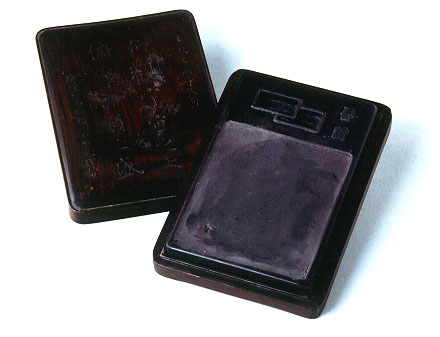

義助慰安婦
—— 李敖百件珍藏義賣藝術品（第35件）
品 名： C4. 翁同龢硯 預估價： 30 萬 成交價： 30 萬 說 明： 中國的文房四寶──筆、墨、紙、硯，硯是最晚出現的，以前寫字並無硯台，故不考究；但自石頭製作的硯出現後，在硯台上也有了千奇百怪的變化。
此為清光緒皇帝的老師翁同龢所用之硯，他是清朝的狀元，寫了一手很好的顏體字，因戊戌政變時引入康有為，而被慈禧軟禁，終老一生。此硯為他的好友所贈，上面寫了一段文字：「仰觀宇宙之大，俯察品類之盛」（出自王羲之的〈蘭亭集序〉），旁邊並寫著松禪仁兄雅玩弟崇光賜贈。此硯之特色為留耕硯，古言「筆耕」，因用筆寫字好似農夫耕田，此為留作筆耕之硯台，上有留耕二字，其下為方口，十分珍貴。
